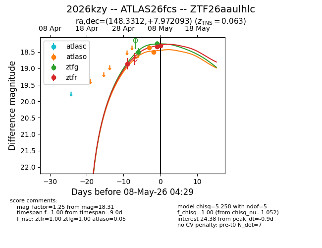
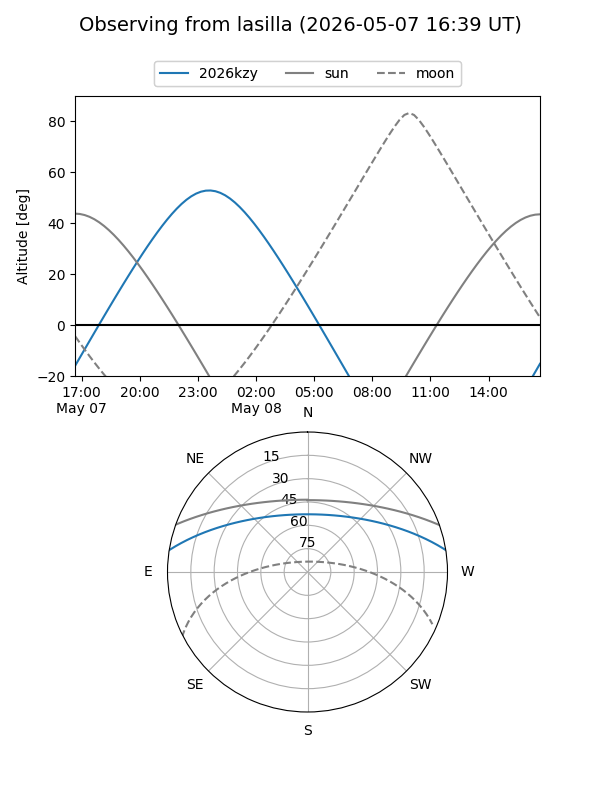
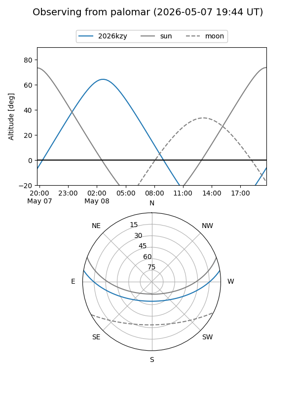
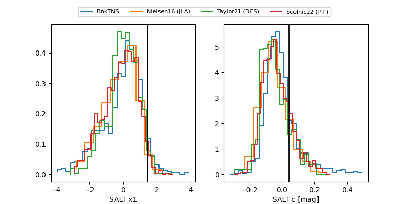

2026kzy
Target 2026kzy at 2026-05-08 04:31
Aliases and brokers:
FINK: link
Lasair: link
ALeRCE: link
TNS: link
YSE: link
alt names
ZTF26aaulhlc (ztf,fink_ztf)
2026kzy (tns,yse)
ATLAS26fcs (atlas)
Coordinates:
equatorial (ra, dec) = 148.3312,+7.97209
equatorial (HMS+DMS) = 09:53:19.48,+07:58:19.53
galactic (l, b) = (228.8829,+43.75570)
Flags:
confirmed ia
Photometry:
last atlaso=18.50, ztfg=18.25, ztfr=18.31
2 atlaso, 2 ztfg, 3 ztfr detections
Lightcurve

Visibility


Additional plots
